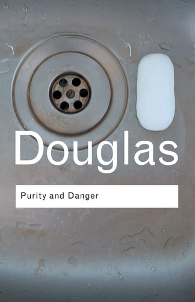
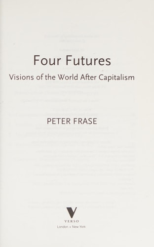

<div class="center"> <h1>Cocaine and Conway's Law</h1> <p><em>what young software engineers need to learn and how we should teach it</em></p> <p><img src="../../files/talks/codebender-logo.svg" alt="Third Bit logo" width="20%" /></p> <h2>Greg Wilson</h2> <p>2025-07-28</p> <p><img src="../../files/talks/cc-by.svg" width="20%" alt="CC-BY" /></p> </div> --- ## Outline - Software has changed everything - Often for the worse - Rising inequality - Radicalization - Ubiquitous surveillance - And now there's AI to worry about - Most discussion by technologists is *shallow* - Andreessen's "Techno-Optimist Manifesto" was embarrassing - If we want better answers, we need to: 1. Develop a better threat model 2. Be humble: the "soft" disciplines are harder than ours 3. *Figure out how to get students to care* --- <br> <br> <br> <br> <div class="center"> <h2>Starting Point</h2> </div> --- ## Three Traditions - Tedre & Sutinen: ["Three Traditions of Computing"](https://doi.org/10.1080/08993400802332332) (2008) <table class="centered" style="font-size: 75%"> <tr> <th valign="top"></th> <th valign="top">Mathematical</th> <th valign="top">Engineering</th> <th valign="top">Scientific</th> </tr> <tr> <th valign="top">Assumptions</th> <td valign="top">Programs (algorithms) are abstract objects, they are correct or incorrect, as well as more or less efficient</td> <td valign="top">Programs (processes) affect the world, they are more or less effective and reliable</td> <td valign="top">Programs can model information processes, models are more or less accurate</td> </tr> <tr> <th valign="top">Aims</th> <td valign="top">Coherent theoretical structures and systems</td> <td valign="top">Investigating and explaining phenomena, solving problems</td> <td valign="top">Constructing useful, efficient, and reliable systems; solving problems</td> </tr> <tr> <th valign="top">Strengths</th> <td valign="top">Rigorous, results are certain, utilized in other traditions</td> <td valign="top">Combines deduction and induction, cumulative</td> <td valign="top">Able to work under great uncertainty, flexible, progress is tangible</td> </tr> <tr> <th valign="top">Weaknesses</th> <td valign="top">Incommensurability of results, uncertainty about what counts as proper science</td> <td valign="top">Limited to axiomatic systems</td> <td valign="top">Rarely follows rigid, preordained procedures; poor generalizability</td> </tr> <tr> <th valign="top">Methods</th> <td valign="top">Empirical, inductive, and deductive</td> <td valign="top">Analytic, deductive (and inductive)</td> <td valign="top">Empirical, constructive</td> </tr> </table> --- ## A Fourth Tradition - Programming as if people mattered <table class="centered" style="font-size: 75%"> <tr> <th valign="top"></th> <th valign="top">…</th> <th valign="top">Humanist tradition</th> </tr> <tr> <th valign="top">Assumptions</th> <td align="center" valign="top">…</td> <td valign="top">Programs are built by people working in particular social settings to serve personal and organizational needs shaped by those settings.</td> </tr> <tr> <th valign="top">Aims</th> <td align="center" valign="top">…</td> <td valign="top">Explanations of why software is built the way it is by the people who build it.</td> </tr> <tr> <th valign="top">Strengths</th> <td align="center" valign="top">…</td> <td valign="top">Explains which problems (and which problem solvers) are considered "valid".</td> </tr> <tr> <th valign="top">Weaknesses</th> <td align="center" valign="top">…</td> <td valign="top">Poor generalizability; often viewed as "story telling" by people unfamiliar with social science methods.</td> </tr> <tr> <th valign="top">Methods</th> <td align="center" valign="top">…</td> <td valign="top">Empirical and qualitative.</td> </tr> </table> --- ## Examples - Petre: ["UML in Practice"](https://dl.acm.org/doi/10.5555/2486788.2486883) (2013) - Careful analysis of interviews to determine why people *don't* use UML - Steinmacher et al: ["Social Barriers Faced by Newcomers Placing Their First Contribution in Open Source Software Projects"](https://doi.org/10.1145/2675133.2675215) (2015) 1. How easy it is to get set up to make a contribution 1. How easy it is to find a task to start with 1. How warmly first contribution is received - Sedano et al: ["Software Development Waste"](http://dx.doi.org/10.1109/icse.2017.20) (2017) - Nine types of waste in software projects, none of which are software issues - Hicks: ["It's Like Coding in the Dark"](https://www.catharsisinsight.com/reports) (2022) - Programmers don't learn because they're afraid to reveal ignorance --- ## Threat Model - [Therac-25 incident](https://en.wikipedia.org/wiki/Therac-25) and [Ariane 5 flight V88](https://en.wikipedia.org/wiki/Ariane_flight_V88) - Direct cause-and-effect relationships - But rare and remote -- - What now appears to be more relevant: - [Tetraethyl lead](https://en.wikipedia.org/wiki/Tetraethyllead) - [Asbestos](https://en.wikipedia.org/wiki/Asbestos) and [mesothelioma](https://en.wikipedia.org/wiki/Mesothelioma) - Oxycodone and [Purdue Pharma](https://en.wikipedia.org/wiki/Purdue_Pharma) - The [fossil fuels lobby](https://en.wikipedia.org/wiki/Fossil_fuels_lobby)'s campaign to promote [climate change denial](https://en.wikipedia.org/wiki/Climate_change_denial) --- ## Now, How Do We Reach This Guy? > Jay is 21, white, straight, and male. > He went into programming because he enjoys solving puzzles, > and daydreams about being the next Mark Zuckerberg. > He would deny being racist, homophobic, or misogynist, > but makes disparaging jokes about "cancel culture" and "DEI hires" to fit in with his peers. > His favorite phrase in arguments is, "Well, actually…" -- - Most programmers know little or nothing about the humanities and social sciences - Most material assumes concepts they've never heard of… - …which makes them feel stupid… - …which they hate - Many don't even believe there's a problem --- <br> <br> <br> <br> <div class="center"> <h2>Build vs. Buy</h2> </div> --- ## Will Management Books Save Us? - Drasner: *[Engineering Management for the Rest of Us](https://isbnsearch.org/isbn/9798986769318)* (2022) - Fournier: *[The Manager's Path](https://isbnsearch.org/isbn/9781491973899)* (2017) - Hughes Johnson: *[Scaling People](https://isbnsearch.org/isbn/9781953953216)* (2023) - Huston: *[The Engineering Leader](https://isbnsearch.org/isbn/9781098154066)* (2024) - Larson: *[Staff Engineer](https://isbnsearch.org/isbn/9781736417911)* (2021) - Lau: *[The Effective Engineer](https://isbnsearch.org/isbn/9780996128100)* (2015) - Orosz: *[The Software Engineer's Guidebook](https://isbnsearch.org/isbn/9789083381824)* (2023) - Reilly: *[The Staff Engineer's Path](https://isbnsearch.org/isbn/9781098118730)* (2022) - Skelton & Pais: *[Team Topologies](https://isbnsearch.org/isbn/9781942788812)* (2019) - Stanier: *[Become an Effective Software Engineering Manager](https://isbnsearch.org/isbn/9781680507249)* (2020) - Swerdlow: *[Tech Leadership](https://isbnsearch.org/isbn/9798988984917)* (2023) - Taze: *[Engineers Survival Guide](https://isbnsearch.org/isbn/9798985349900)* (2021) --- ## Disappointing Gaps - Employees' rights - Workplace discrimination: less than 8 pages between 12 books - Professional liability: or rather, why there isn't any - Co-operatives and other organizational models - Regulatory capture > None of the courses on entrepreneurship or the business of software that I looked at > covered these topics either. --- ## This Isn't "Politics" - A reviewer said "politics doesn't belong in software engineering courses" - But *not* talking about these things, while talking about venture capital and IPOs, is a "political" decision - Most of the people who use the word "politics" as an insult would struggle to define it correctly - "Decision-making in groups in the absence of agreement on goals" -- > Several of the books we're about to discuss don't align with my personal beliefs, > but are still examples of deep thinking and deserve to be taken seriously --- ## Why Don't We Talk About This? <div class="row"> <div class="col-4">  </div> <div class="col-8"> Mary Douglas: <em><a href="https://isbnsearch.org/isbn/9780415289955">Purity and Danger: An Analysis of Concepts of Pollution and Taboo</a></em> (2002) <ul> <li>Every group places some things out of bounds as a way of identifying who's in and who's out</li> <li>Racial slurs I used as a young man are now taboo</li> <li>Public discussion of sexuality is now accepted</li> </ul> </div> </div> -- - These insights can help us build better software and a better society - But people in "hard" disciplines tend to look down on the "soft" ones - Until they become managers… --- ## Looking Elsewhere - Béranger: *[Medical Information Systems Ethics](https://onlinelibrary.wiley.com/doi/book/10.1002/9781119178224)* - Goltz & Dowdesell: *[Real World AI Ethics for Data Scientists](https://isbnsearch.org/isbn/9781032275055)* (2023) - Kizza: *[Ethical and Secure Computing](https://isbnsearch.org/isbn/9783031319051)* (2023) - Schlossberger: *[Ethical Engineering: A Practical Guide with Case Studies](https://isbnsearch.org/isbn/9781032151120)* (2023) - Steen: *[Ethics for People Who Work in Tech](https://isbnsearch.org/isbn/9780367542436)* (2022) -- > It doesn't matter what you say if no one stays awake to hear it. --- ## It Can Be Interesting <div class="row"> <div class="col-4"> <img src="../../files/books/levitt-freakonomics.jpg" alt="Levitt and Dubner: Freakonomics" width="200px"> </div> <div class="col-8"> Steven Levitt & Stephen Dubner: <em><a href="https://isbnsearch.org/isbn/9780061234002">Freakonomics</a></em> (2006) <ul> <li>"The profit motive is the only valid way to analyze individual behavior"</li> <li>…which is provably wrong, but their writing is engaging…</li> <li>…and tech bros are suckers for simple answers to hard questions that fit their preconceived ideas…</li> <li>…especially when they have no idea where those ideas came from</li> </ul> </div> </div> -- - Possibly the most effective piece of propaganda in the last thirty years - Can we do this, but for good? --- ## More Relevant to Big Tech <div class="row"> <div class="col-4"> </div> <div class="col-8"> Tom Wainright: <em><a href="https://isbnsearch.org/isbn/9781610397704">Narconomics: How to Run a Drug Cartel</a></em> (2017) <ul> <li>Turns out that marketing and HR are big challenges</li> <li>And you can learn a lot about how business actually works by looking at ones that ignore the legal system</li> </ul> </div> </div> -- - Big tech companies sell deliberately addictive products… - …treat the law as a business expense… - …and are frequently run by narcissists --- <br> <br> <br> <br> <div class="center"> <h2>Possible Content</h2> </div> --- ## Recognize Fraud <div class="row"> <div class="col-4"> </div> <div class="col-8"> Dan Davies: <em><a href="https://isbnsearch.org/isbn/9781982114947">Lying for Money: How Legendary Frauds Reveal the Workings of the World</a></em> (2022) <ul> <li>You will understand tech companies' business models better once you know how to recognize common types of fraud</li> </ul> </div> </div> --- ## Organizational Knowledge <div class="row"> <div class="col-4"> </div> <div class="col-8"> Howard Baetjer Jr.: <em><a href="https://isbnsearch.org/isbn/9780818677793">Software as Capital: An Economic Perspective on Software Engineering</a></em> (1997) <ul> <li>No single person knows how to make a car (or Linux)</li> <li>Tools for thinking about the value of institutional knowledge and how we preserve it</li> </ul> </div> </div> -- > [Conway's Law](https://en.wikipedia.org/wiki/Conway%27s_law) and sociotechnical congruence > should be part of every software engineer's education. --- ## Conway's Law <div class="row"> <div class="col-4"> <img src="../../files/books/bellotti-fire.jpg" alt="Bellotti: Kill It With Fire" width="200px"> </div> <div class="col-8"> Marianne Bellotti: <em><a href="https://isbnsearch.org/isbn/9781718501188">Kill It With Fire: Manage Aging Computer Systems (and Future Proof Modern Ones)</a></em> (2021) <ul> <li>Cannot modernize legacy software without changing the social structures that produced them…</li> <li><em>…and are now supported by them</em></li> </ul> </div> </div> -- - "…if you want to know what parts of the project are suffering the most, pay attention to what the team is having meetings about" - "Managing technical debt is about restoring consistency." - …and many other insights --- ## Central vs. Local Control <div class="row"> <div class="col-4"> <img src="../../files/books/scott-seeing.jpg" alt="Scott: Seeing Like a State" width="200px"> </div> <div class="col-8"> James C. Scott: <em><a href="https://isbnsearch.org/isbn/9780300078152">Seeing Like a State: How Certain Schemes to Improve the Human Condition Have Failed</a></em> <ul> <li>Large organizations always prefer <em>legibility</em> over productivity</li> <li>Value <em>techne</em> (universal, first principles) over <em>metis</em> (situational, experiential)</li> </ul> </div> </div> -- > "Do it however you want" also has a price. --- ## Another Example <div class="row"> <div class="col-4"> </div> <div class="col-8"> Leigh Phillips & Michal Rozworski: <em><a href="https://isbnsearch.org/isbn/9781786635167">The People's Republic of Walmart</a></em> (2019) <ul> <li>Most of the world's economic activity occurs within large companies like Walmart and Amazon</li> <li>Which all use Soviet-style central planning</li> <li>Did the USSR just not have the right IT?</li> <li>Have big companies just managed to outsource the failure?</li> <li>Or is there some deeper difference?</li> </ul> </div> </div> -- > Can we give programmers the intellectual tools they need to ask and answer these questions? --- ## Decision Making <div class="row"> <div class="col-4"> </div> <div class="col-8"> Eric Raymond: <em><a href="https://isbnsearch.org/isbn/9781565927247">The Cathedral and the Bazaar</a></em> (1999) <ul> <li>A compelling but misleading myth about the social organization of open source</li> </ul> </div> </div> -- - Freeman: <a href="https://en.wikipedia.org/wiki/The_Tyranny_of_Structurelessness">"The Tyranny of Structurelessness"</a> (1972) - Every social group has a power structure - Only question is whether it is explicit and accountable or implicit and unaccountable --- ## Power and Influence <div class="row"> <div class="col-4"> <img src="../../files/books/wendorff-politics.jpg" alt="Wendorff: Politics in Software Development" width="200px"> </div> <div class="col-8"> Peter Wendorff: <em><a href="https://isbnsearch.org/isbn/9781484273791">Politics in Software Development</a></em> (2022) <br> Three mental models of politics in organizations <ol> <li>The official version: we're all working together toward a common goal</li> <li>Grumbling: everyone is a self-interested Machiavelli</li> <li>Reality: sincere differences of opinion lead to power struggles because we <em>don't</em> agree on means and ends</li> </ol> </div> </div> -- > How well a group manages those disagreements determines how (dys)functional it is. --- ## Coalitions <div class="row"> <div class="col-4"> <img src="../../files/books/bueno-dictator.jpg" alt="Bueno de Mesquita and Smith: The Dictator's Handbook" width="200px"> </div> <div class="col-8"> Bruce Bueno de Mesquita & Alastair Smith: <em><a href="https://isbnsearch.org/isbn/9781541701366">The Dictator's Handbook: Why Bad Behavior is Almost Always Good Politics</a></em> (2022) <ul> <li>Nominal selectorate: those who nominally have a say</li> <li>Real selectorate: those who actually cast a vote</li> <li>Winning coalition: those whose votes produce victory</li> </ul> </div> </div> -- 1. The smaller the winning coalition, the fewer people to satisfy to remain in control. 1. The larger the selectorate, the easier it is to replace dissenters. 1. Extract as much wealth as you can without provoking rebellion or recession. 1. Give your essential supporters just enough rewards to keep them loyal. 1. Do not reward your supporters too well or they will become a threat. --- ## Fairness and Productivity <div class="row"> <div class="col-4"> <img src="../../files/books/wilkinson-level.jpg" alt="Wilkinson and Pickett: The Spirit Level" width="200px"> </div> <div class="col-8"> Richard Wilkinson & Kate Pickett: <em><a href="https://isbnsearch.org/isbn/9781608193417">The Spirit Level</a></em> (2011) <ul> <li>Greater equality improves outcomes for everyone</li> <li>If the game is fair, it's worth playing</li> <li>If it isn't, people don't play because they're either sure to win or to lose</li> </ul> </div> </div> -- > If you can convince the lowest white man he's better than the best colored man, > he won't notice you're picking his pocket. > Hell, give him somebody to look down on and he'll empty his pockets for you. > <br> > — Lyndon B. Johnson --- ## Three Kinds of Property <div class="row"> <div class="col-2"> <img src="../../files/books/linklater-owning.jpg" alt="Linklater: Owning the Earth" width="100px"> </div> <div class="col-10"> Andro Linklater: <em><a href="https://isbnsearch.org/isbn/9781620402917">Owning the Earth: The Transforming History of Land Ownership</a></em> (2015) <br> The idea that individuals can own land is younger than most people realize; its emergence holds lessons for today's debates over intellectual property. </div> </div> <div class="row"> <div class="col-2"> </div> <div class="col-10"> Oren Bracha: <em><a href="https://isbnsearch.org/isbn/9781108790697">Owning Ideas: The Intellectual Origins of American Intellectual Property, 1790–1909</a></em> (2019) <br> The idea of "intangible property" is also fairly new; understanding why and how it was invented is essential to understanding debates about training data for AI. </div> </div> <div class="row"> <div class="col-2"> </div> <div class="col-10"> Sarah E. Igo: <em><a href="https://isbnsearch.org/isbn/9780674244795">The Known Citizen: A History of Privacy in Modern America</a></em> (2020) <br> The right to privacy is the youngest of the three; again, you can't be part of the debate without understanding how we got here. </div> </div> --- ## Professional Responsibility <div class="row"> <div class="col-4"> </div> <div class="col-8"> Jessie Singer: <em><a href="https://isbnsearch.org/isbn/9781982129682">There Are No Accidents: The Deadly Rise of Injury and Disaster—Who Profits and Who Pays the Price</a></em> (2023) <ul> <li>Contrasts "blame the individual" with "blame the system"</li> <li>Shows that companies push the latter to absolve themselves of responsibility</li> </div> </div> -- > Licensure and security make more sense when thought about this way. --- ## Corporate Responsibility <div class="row"> <div class="col-4"> </div> <div class="col-8"> Guido Palazzo and Ulrich Hoffrage: <em><a href="https://isbnsearch.org/isbn/9781541705302">The Dark Pattern: The Hidden Dynamics of Corporate Scandals</a></em> (2025) <ul> <li>There are patterns in the dynamics of corporate scandals</li> <li>If we teach them, can we prevent them?</li> </ul> </div> </div> <table> <tr> <td style="border: none; padding-right: 2rem;"> rigid ideology <br> toxic leadership <br> manipulative language </td> <td style="border: none; padding-right: 2rem;"> corrupting goals <br> destructive incentives <br> ambiguous rules </td> <td style="border: none; padding-right: 2rem;"> perceived unfairness <br> dangerous groups <br> slippery slope </td> </table> --- ## Cheating <div class="row"> <div class="col-4"> </div> <div class="col-8"> James M. Lang: <em><a href="https://isbnsearch.org/isbn/9780674724631">Cheating Lessons: Learning from Academic Dishonesty</a></em> (2023) <ul> <li>Personalize discussion of motivation and misaligned incentives</li> <li>See if they can apply what they've learned</li> </ul> </div> </div> --- <br> <br> <br> <br> <div class="center"> <h2>Wrapping Up</h2> </div> --- ## Why This Matters <div class="row"> <div class="col-2"> <img src="../../files/books/young-abolishing.jpg" alt="Young: Abolishing Fossil Fuels" width="100px"> </div> <div class="col-10"> Kevin Young: <em><a href="https://isbnsearch.org/isbn/9798887440330">Abolishing Fossil Fuels: Lessons From Movements That Won</a></em> (2024) <ul> <li>Social reform only happens when economic pressure is applied</li> <li>"Protests make headlines, but boycotts change laws"</li> </ul> </div> </div> <div class="row"> <div class="col-2">  </div> <div class="col-10"> Peter Frase: <em><a href="https://isbnsearch.org/isbn/9781781688137">Four Futures: Life After Capitalism</a></em> <ul> <li>Explores four ways increasing automation and worsening climate change might play out</li> </ul> </div> </div> -- - This is the worst job market for junior programmers *ever* - People whose hopes have failed look for someone to blame - If we don't explain how the world works, someone much less pleasant will do so --- ## Conclusion (?) - My generation squandered the best world we've ever had -- - But better *is* possible -- - The best thing we can do now is help you learn the things we chose to ignore -- - And it's fun (if you skip the boring bits) --- ## Thank You, and Good Luck <div class="row"> <div class="col-4"> <p></p> </div> <div class="col-8"> <p><a href="http://third-bit.com">Greg Wilson</a></p> <p><a href="mailto:gvwilson@third-bit.com">gvwilson@third-bit.com</a></p> <p><a href="http://third-bit.com/talks/sdgc/">http://third-bit.com/talks/sdgc/</a></p> </div> </div> <div align="center"> <p><em>start where you are · use what you have · help who you can</em></p> </div> --- ## Abstract Most young programmers have only ever been exposed to one worldview: the toxic strain of neoliberal capitalism favored by venture capitalists and their gushing fans in the tech media. As a result, they don't have the intellectual tools to understand how tech contributes to climate change, widening inequality, the resurgence of racist nationalism, and a host of other problems. Lots of books offer cogent answers to these questions, but very few programmers are going to read nine thousand pages on a whim. However, they *might* sit through a one-semester course that introduces a few fundamental ideas, including why "flat" organizations make power imbalances worse rather than better, why discrimination persists despite its economic inefficiency, how regulatory capture works, and what can we learn about big tech by studying drug cartels.